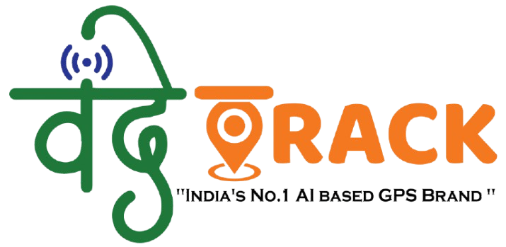

Page not found
The page you're looking for was moved or never existed. Let's get you back on track — or talk to us directly, we respond every day between 10 AM and 6 PM.

The page you're looking for was moved or never existed. Let's get you back on track — or talk to us directly, we respond every day between 10 AM and 6 PM.